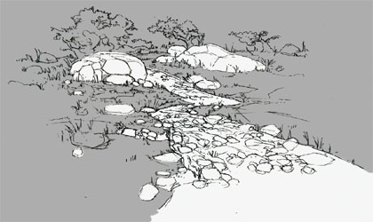

|
The Battle of Thermopylae: Spartans v. Persians |
|
|

Above the pass of Thermopylae was another path that was known to local people only. It would allow the Persians to come secretly through the mountains and round behind the Greek army guarding the pass below. The Greeks would then be trapped with the Persians in front of and behind them.
|
|
| How do we know this? | |
| ...previous | next... |